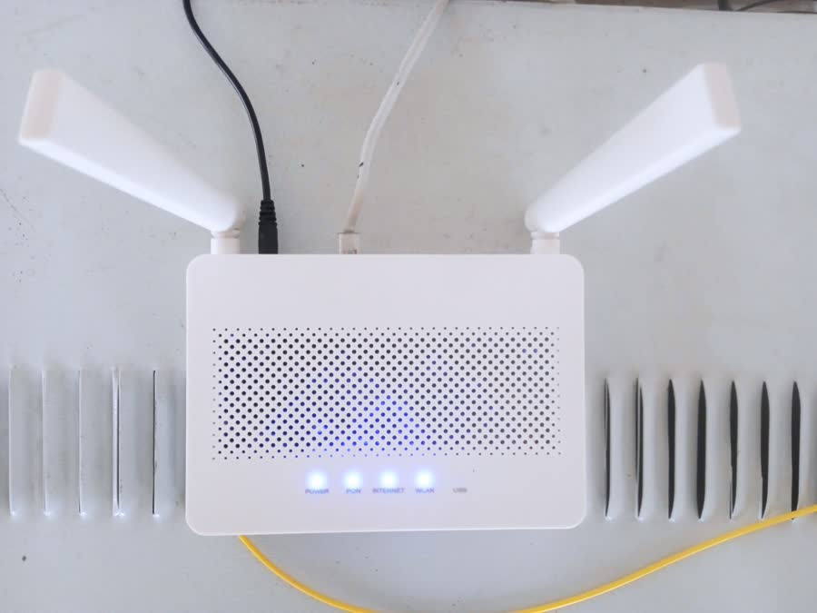
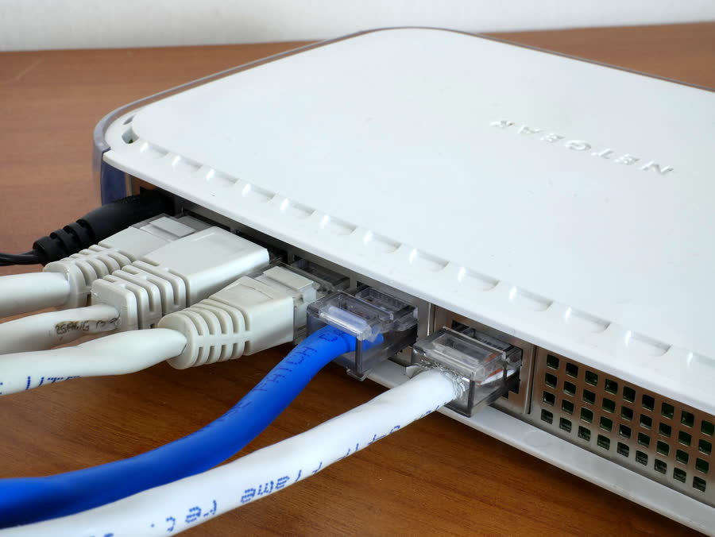
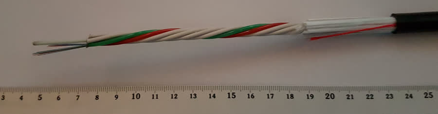
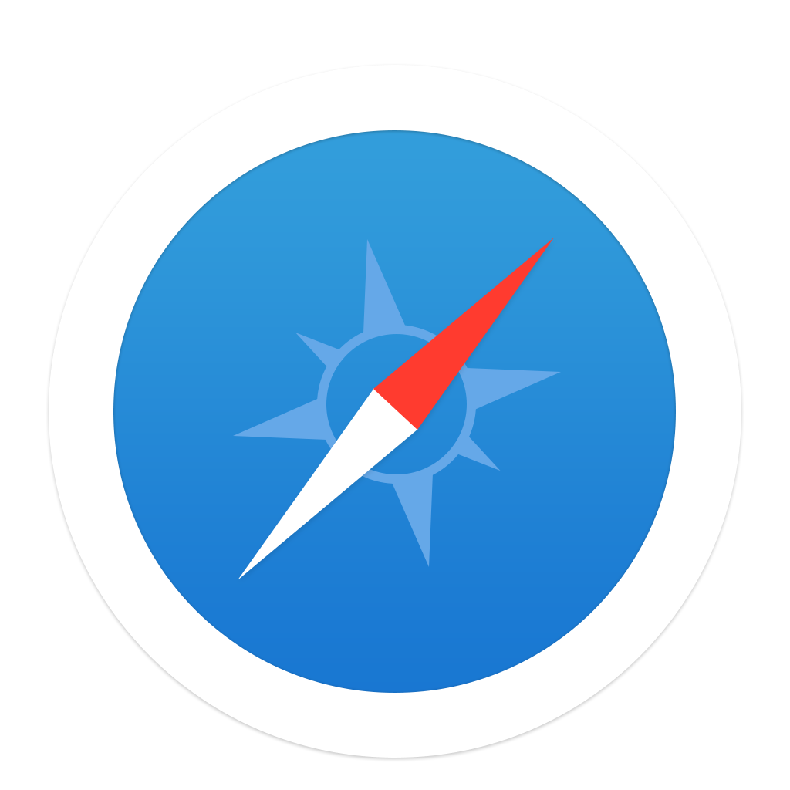

Una red de redes
Conecta redes hogareñas, empresariales, universitarias y de proveedores de servicio entre sí, formando una única red global a la que todos pueden sumarse.
Informática Aplicada · C1-21-10 · Todas las comisiones · Unidad 1
En la Clase 1 vimos qué es una computadora y cómo se organizan su hardware, su software y su Sistema Operativo. Ahora damos un paso más: cómo esas computadoras se conectan entre sí para formar Internet, la red más grande que existe, y cómo navegarla de forma segura.
Punto de partida
Internet es una red mundial que conecta millones de computadoras, celulares y otros dispositivos entre sí, permitiéndoles intercambiar información sin importar en qué lugar del mundo se encuentren. No es un único cable ni una sola computadora central: es la suma de miles de redes más pequeñas conectadas bajo reglas comunes.
Conecta redes hogareñas, empresariales, universitarias y de proveedores de servicio entre sí, formando una única red global a la que todos pueden sumarse.
Ningún país ni empresa es "dueño" de Internet. Funciona porque todas las redes que la componen aceptan usar los mismos protocolos, es decir, las mismas reglas de comunicación.
La información no viaja entera: se divide en pequeños "paquetes" de datos que pueden tomar caminos distintos y se vuelven a ordenar al llegar a destino.
Internet
Es la red física y lógica que conecta los dispositivos: cables, antenas, satélites, routers y los protocolos que hacen posible el intercambio de datos entre ellos.
World Wide Web (WWW)
Es el sistema de páginas y sitios conectados por enlaces (hipervínculos) que consultamos con un navegador. Es la parte más visible de Internet, pero no la única.
En el uso cotidiano decimos "entrar a Internet" para referirnos a navegar páginas web, pero en realidad la Web es apenas uno de los servicios que corren sobre Internet. El correo electrónico, el streaming de video o una videollamada también usan Internet, sin pasar necesariamente por un navegador.
Detrás de escena
Cuando escribimos una dirección en el navegador, nuestra computadora no "va a buscar" la página por sí sola: le pide esa información a otra computadora, especializada en guardarla y entregarla, llamada servidor.
El cliente pide una página (solicitud) y el servidor se la envía de vuelta (respuesta). Ese ida y vuelta ocurre en fracciones de segundo, muchas veces por minuto.
Es el número que identifica de forma única a cada dispositivo conectado a una red, de manera parecida a como una dirección postal identifica una casa.
Ejemplo: una IP puede verse así:
190.15.201.4. Sin ese número, ningún dato sabría
a dónde llegar.
El Sistema de Nombres de Dominio (DNS) traduce nombres fáciles
de recordar, como www.educ.ar, a la dirección IP
numérica del servidor donde está esa página.
Por eso: escribimos nombres de dominio en el navegador y no largas cadenas de números.
Los servidores que alojan páginas y servicios suelen estar en centros de datos como este, funcionando las 24 horas.
De ARPANET a hoy
Internet no apareció de un día para el otro: es el resultado de varias décadas de avances que fueron conectando cada vez más redes, dispositivos y personas.
Una red militar y académica en EE. UU. conecta 4 universidades. Es el antecedente directo de Internet.
Se estandariza el "idioma" común que permite conectar redes distintas entre sí. Ahí nace, en sentido estricto, el término Internet.
Tim Berners-Lee crea el sistema de páginas con enlaces (hipertexto) que hace que cualquier persona pueda navegar la red.
Llegan la banda ancha, el correo electrónico, los buscadores, el comercio electrónico y las primeras redes sociales.
Miles de millones de personas y dispositivos —celulares, relojes, electrodomésticos— conectados en simultáneo.
Cómo se conectan los dispositivos
Antes de llegar a Internet, cada dispositivo forma parte de una red más pequeña, como la de una casa, una oficina o una escuela. Estas redes se clasifican según su alcance y según si usan cables o transmiten por ondas de radio.
Conecta dispositivos dentro de un espacio reducido, como una casa, una oficina o un aula. Suele combinar cables y Wifi.
Conecta redes que están lejos entre sí, incluso en distintas ciudades o países. Internet es, en sí misma, la WAN más grande que existe.
Permite conectarse a una red local sin cables, usando ondas de radio de corto alcance emitidas por un router.
Confusión frecuente
En muchos hogares un solo aparato cumple las dos funciones, pero conceptualmente son tareas distintas.
Módem
Convierte la señal que llega desde el proveedor de Internet (por teléfono, cable o fibra) en datos que la red doméstica puede utilizar.
Router
Toma esa conexión y la distribuye entre varios dispositivos a la vez, por cable o por Wifi, creando la red local de la casa.

Con sus antenas emite la señal inalámbrica que reciben celulares, notebooks y smart TVs.

Los cables de red (Ethernet) ofrecen una conexión más estable que el Wifi para equipos fijos.
Del proveedor a tu casa
El proveedor de servicios de Internet (ISP) puede hacer llegar la conexión de distintas formas, con diferencias importantes en velocidad, estabilidad y cobertura.
| Tipo | Cómo funciona | Velocidad aproximada |
|---|---|---|
| Dial-up | Usa la línea telefónica tradicional y la ocupa por completo | Muy baja (hasta 56 kbps) |
| ADSL | Usa la línea telefónica en una frecuencia separada, sin ocupar el teléfono | Media (hasta 20-25 Mbps) |
| Cable módem | Aprovecha la misma red del servicio de televisión por cable | Alta (decenas a cientos de Mbps) |
| Fibra óptica | Transmite datos como pulsos de luz por cables de vidrio | Muy alta (cientos de Mbps a varios Gbps) |
| Satelital | Se conecta con un satélite en órbita, útil en zonas rurales | Variable, con mayor demora (latencia) |
| Móvil (3G/4G/5G) | Usa la red de antenas de telefonía celular | Media a muy alta, según la generación |

Ejemplo: mirar un video en baja calidad exige poca velocidad, pero una videollamada grupal en alta calidad necesita una conexión rápida y estable en ambos sentidos.
La puerta de entrada a la Web
El navegador es el programa que le pide páginas a los servidores, interpreta su código y nos las muestra de forma visual y ordenada. Sin un navegador, no podríamos ver la Web.
Navegador
El más utilizado en el mundo. Se integra con las cuentas y servicios de Google.

Navegador
Navegador de código abierto, reconocido por su enfoque en la privacidad.

Navegador
Viene instalado por defecto en Windows y está basado en el mismo motor que Chrome.

Navegador
El navegador predeterminado de Apple, presente en Mac, iPhone y iPad.
Para leer una dirección
Una URL (localizador uniforme de recursos) es la dirección de una página web. Se lee de izquierda a derecha y cada parte cumple una función distinta.
https://www.educ.ar/recursos/buscar
https:// significa que la conexión con el servidor está cifrada.Qué podemos hacer en la red
La Web es apenas uno de los tantos servicios que funcionan sobre Internet. Reconocerlos ayuda a entender por qué la usamos para tantas cosas distintas a lo largo del día.
Páginas de información, tiendas, plataformas educativas y de gobierno, conectadas por enlaces.
Envío de mensajes y archivos adjuntos a través de cuentas como Gmail o Outlook.
Comunicación en tiempo real e intercambio de contenidos: WhatsApp, Instagram, entre otras.
Música y video a demanda, sin necesidad de descargar el archivo completo antes de reproducirlo.
Guardar y compartir archivos en servidores remotos, accesibles desde cualquier dispositivo.
Compras, pagos y gestiones de gobierno realizadas de manera online.
Navegar con cuidado
Usar Internet todos los días también implica cuidar la información personal. Algunas prácticas simples reducen mucho los riesgos más comunes.
Usar contraseñas largas y distintas para cada servicio, y activar la verificación en dos pasos cuando esté disponible.
Desconfiar de mensajes o enlaces que piden datos personales o bancarios con urgencia, incluso si parecen venir de un conocido.
Antes de ingresar datos sensibles, revisar que la dirección
comience con https://, señal de que la conexión
está cifrada.
En el foro de la Unidad, vamos a compartir qué tipo de conexión a Internet usan en su casa o su celular, y qué medida de seguridad de las vistas en esta clase ya aplican o van a empezar a aplicar.
Cierre de la clase
Un repaso de los conceptos más importantes de la Clase 2, con preguntas para abrir el debate.
| Término | Definición breve | Ejemplo |
|---|---|---|
| Internet | Red mundial que conecta redes más pequeñas entre sí | La red detrás de la Web, el correo, el streaming |
| World Wide Web | Sistema de páginas conectadas por enlaces | Un sitio como educ.ar |
| Cliente-servidor | Modelo donde un dispositivo pide y otro responde | Tu navegador y el servidor de una página |
| Dirección IP | Número que identifica a cada dispositivo en la red | 190.15.201.4 |
| DNS | Traduce nombres de dominio a direcciones IP | www.educ.ar → número de IP del servidor |
| Router / módem | Reparten y traducen la conexión, respectivamente | El equipo Wifi de tu casa |
| URL | Dirección de un recurso en la Web | https://www.educ.ar/recursos |
| HTTPS | Protocolo que cifra la comunicación con el servidor | El candado en la barra de direcciones |
"Internet no es un lugar al que 'entramos': es una enorme red de acuerdos técnicos que hace posible que cualquier dispositivo, en cualquier parte del mundo, pueda comunicarse con otro."
Recursos multimedia
Material audiovisual para reforzar y ampliar los conceptos vistos en esta clase. Sus canales no permiten reproducirlos incrustados en otros sitios, así que se abren en YouTube al hacer clic.

¿Qué es Internet?
ARSAT · Ver en YouTube ↗

¿Qué son las redes y cómo funciona Internet?
EDteam · Ver en YouTube ↗

¿Quién inventó internet? La historia de internet
DW Español · Ver en YouTube ↗